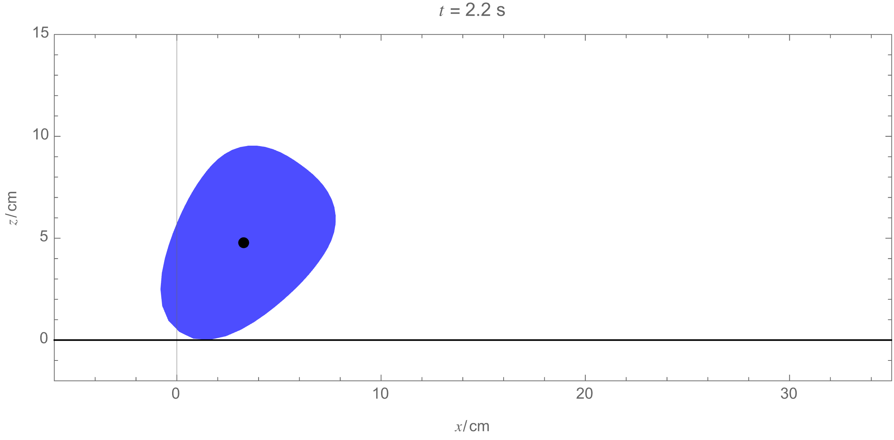
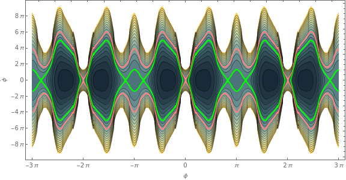

Homepage
Papers
-
A theory of ecological invasions and its implications for eco-evolutionary dynamics (2024)
Zhijie Feng, Emmy Blumenthal, Pankaj Mehta, Akshit Goyal
PDF | arXiv -
Phase Transition to Chaos in Complex Ecosystems with
Nonreciprocal Species-Resource Interactions (2024)
Physical Review Letters (Editors' Suggestion)
Emmy Blumenthal, Jason Rocks, Pankaj Mehta
PDF | Supporting Information | Journal Link | arXiv -
Geometry of ecological coexistence and niche differentiation (2023)
Emmy Blumenthal, Pankaj Mehta
Physical Review E
PDF | Journal Link | arXiv -
Search for Axionlike Dark Matter Using Solid-State Nuclear Magnetic Resonance (2021)
Deniz Aybas, Deniz Aybas, Janos Adam, Emmy Blumenthal, Alexander V. Gramolin, Dorian Johnson, Annalies Kleyheeg, Derek F. Jackson Kimball1, Dmitry Budker, and Alexander O. Sushkov, et al
Physical Review Letters
PDF | Journal Link | arXiv
Miscellaneous projects
-
Lagrangian mechanics of 2D rolling body
(2023)
Emmy Blumenthal
Wolfram Community Post
 -
Solving the wave equation on a torus (2019)
Emmy Blumenthal
Wolfram Community Post